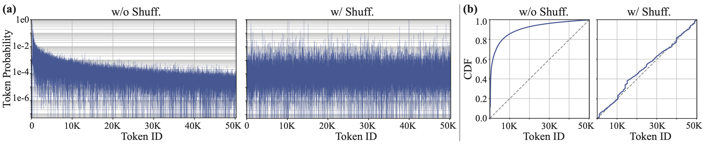
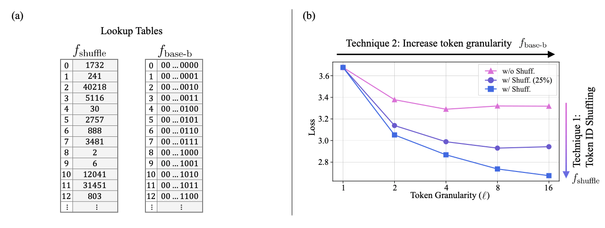
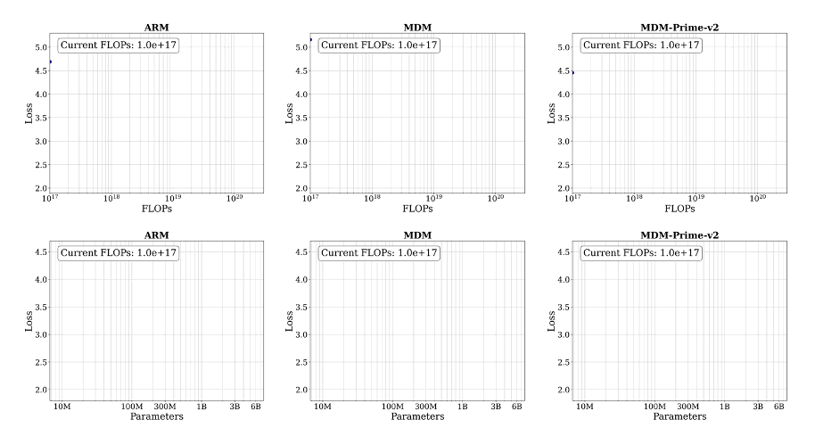
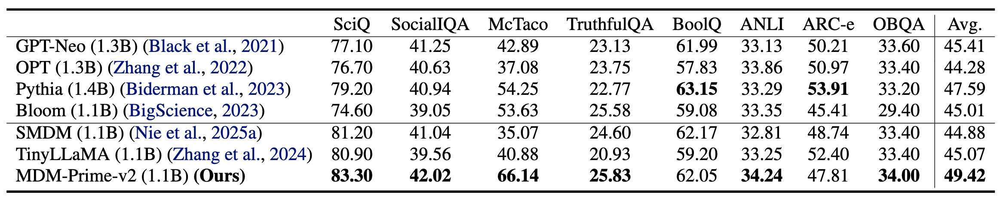

MDM-Prime-v2: Binary Encoding and Index Shuffling Enable
Scaling of Diffusion Language Models

Figure 1. The animation shows the 1.1B-scale zero-shot accuracy comparison across eight commonsense reasoning benchmarks, where MDM-Prime-v2 achieves the highest average accuracy.
A Principled Subtokenizer Design
A subtokenizer is an invertible mapping that converts each token into a sequence of $\ell$ sub-tokens, letting the diffusion process denoise at a finer granularity than whole tokens. This work identifies two open questions about the subtokenizer $\ff_\ell$: (1) what functional form should it take, and (2) how should the granularity $\ell$ be chosen?

Figure 2. Overview of MDM, MDM-Prime, and the MDM-Prime-v2 enhancements.
Technique 1: Index Shuffling
The training loss is minimized when sub-tokens carry as much entropy as possible. But sub-tokens produced by directly base-$b$-encoding the token indices from commonly-used Byte-Pair Encoding (BPE) tokenizers are low-entropy: BPE assigns small indices to frequent tokens, so token probability ends up inversely proportional to the token index (see the left subplots with title `without Shuff' in Fig. 3 (a) and (b)).

Figure 3. (a) Token probability and (b) cumulative distribution function (CDF) over token indices of the GPT-2 tokenizer evaluated on the C4 dataset. The left and right subplots of (a) and (b) show setups without and with index shuffling, respectively. The gray dashed line in (b) represents the CDF of a uniform token distribution.
To fix this, we randomly shuffle the token indices before base-$b$ encoding, scattering similar probability mass across sub-token slots. This pushes sub-token entropy to within a fraction of a bit of the theoretical maximum for every granularity we tested (results on C4 with the GPT-2 tokenizer, $V=50{,}257$):
| $\ell$ | without Shuffling | with Shuffling (25%) | with Shuffling | Maximum |
|---|---|---|---|---|
| 16 | 0.8146 | 0.9038 | 0.9936 | 1.0000 |
| 8 | 1.6152 | 1.8040 | 1.9811 | 2.0000 |
| 4 | 3.2051 | 3.5360 | 3.8553 | 3.9069 |
| 2 | 6.1489 | 6.7880 | 7.2803 | 7.8138 |
Table 1. Entropy of sub-tokens (bits) across different $\ell$. `without Shuffling (25%)' shuffles only the first 25% of token indices.
Technique 2: Binary Encoding
The granularity $\ell$ itself also matters. The best achievable loss never increases as $\ell$ grows, and we confirm this trend tracks downstream accuracy too, not just loss (170M-parameter models on SlimPajama, ARC-e; also see Fig. 4(b)). So we pick the maximum viable granularity $\ell=\lceil \log_2 V\rceil$, under which $\ff_\ell$ encodes tokens into binary sub-tokens.
Implementation via Lookup Tables
The two techniques give the subtokenizer $\ff_\ell= \ff_\text{base-$b$}\circ \ff_\text{shuffle}$: shuffle the token indices, then binary-encode them. The entire operation is implemented using lookup tables, requiring zero FLOPs and can be performed during data preprocessing. Fig. 4 shows an example of this operation.

Figure 4. (a) The subtokenizer $\ff_\ell$ in MDM-Prime-v2 is implemented via two lookup tables. (b) Loss of MDM ($\ell=1$) and MDM-Prime ($\ell>1$) under three setups: `without Shuffling,' `with Shuffling (25%)', and `with Shuffling' $\lceil\log_2 V\rceil=16$ represents the maximum of $\ell$. All models are trained using $10^{19}$ FLOPs on C4, tokenized using the GPT-2 tokenizer.
Experiments
Loss Behavior and Scaling Properties

Figure 5. Loss envelopes and isoFLOP curves of ARM, MDM, and MDM-Prime-v2, varying the compute budget from $3\times10^{18}$ to $3\times10^{20}$ FLOPs.
We fit a Chinchilla-style power-law scaling law to each method's loss to determine how compute should be split between model size ($N_\text{opt}\propto C^{a}$) and training tokens ($D_\text{opt}\propto C^{b}$) at the compute-optimal frontier.
| Method | $a$ ($N_\text{opt}\propto C^{a}$) | $b$ ($D_\text{opt}\propto C^{b}$) |
|---|---|---|
| ARM | 0.52 | 0.48 |
| MDM | 0.50 | 0.50 |
| MDM-Prime-v2 | 0.50 | 0.50 |
Table 2. Chinchilla coefficients for ARM, MDM, and MDM-Prime-v2. A larger $a$ means compute should prioritize model parameters.
ARM's compute-optimal setup favors bigger models. MDM and MDM-Prime-v2 instead favor more training tokens — a good fit for modern recipes (e.g., LLaMA) that shrink the model and train longer for cheaper inference.
1.1B-Scale Pretraining: Zero-Shot Commonsense Reasoning
We train a 1.1B-parameter model on 540B tokens from SlimPajama, matching the setup of TinyLLaMA (ARM) and SMDM (MDM).

Figure 6. Zero-shot accuracies evaluated on eight commonsense reasoning benchmarks. Higher values correspond to better performance.
MDM-Prime-v2 achieves the highest average accuracy (49.42%) across eight commonsense reasoning benchmarks against similar-sized ARM and MDM baselines (GPT-Neo, OPT, Pythia, Bloom, SMDM, TinyLLaMA), beating SMDM — the MDM baseline trained under an identical setup — by 4.87 points, with the largest gains on SciQ and McTaco.
Related Resources
MDM-Prime-v2 builds on the Partial masking scheme introduced in our prior work, Beyond Masked and Unmasked: Discrete Diffusion Models via Partial Masking (NeurIPS 2025).
Errata: Dependency Breaks ELBO
errata noteThe original MDM-Prime-v2 preprint (Mar. 30, 2026) reported that the model exhibits more favorable compute-optimal scaling than autoregressive models (ARMs). The training objective used in those comparisons, however, is not a valid evidence lower bound (ELBO): prior work (EDLM) proposed capturing the joint distribution over sub-tokens, which breaks the independence assumption the bound relies on, so the resulting loss is not actually a bound on the data negative log-likelihood. We discuss this issue and its implications in a dedicated errata note.
BibTeX
@inproceedings{chao2026mdmprimev2,
title = {{MDM-Prime-v2: Binary Encoding and Index Shuffling Enable Scaling of Diffusion Language Models}},
author = {Chen-Hao Chao and Wei-Fang Sun and Junwei Quan and Chun-Yi Lee and Rahul G. Krishnan},
booktitle = {Proceedings of the Conference on Empirical Methods in Natural Language Processing (EMNLP)},
year = {2026},
}
@inproceedings{chao2025mdmprime,
title = {{Beyond Masked and Unmasked: Discrete Diffusion Models via Partial Masking}},
author = {Chen-Hao Chao, Wei-Fang Sun, Hanwen Liang, Chun-Yi Lee, Rahul G. Krishnan},
booktitle = {Proceedings of the Conference on Neural Information Processing Systems (NeurIPS)},
year = {2025},
}